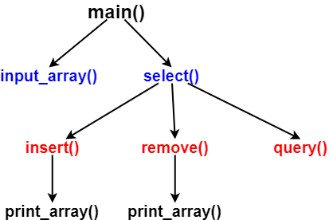
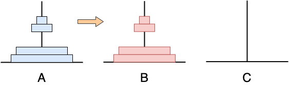
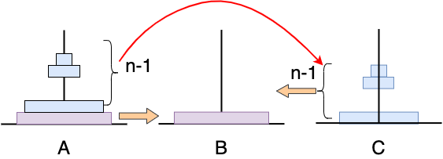

程序设计基础
第十章 函数与程序结构
第10章 函数与程序结构
本章要点
- 怎样把多个函数组织起来?
- 怎样用结构化程序设计的思想解决问题?
- 怎样用函数嵌套求解复杂的问题?
- 怎样用函数递归解决问题?
- 如何使用宏?
- 如何使用多文件模块构建较大规模程序?
10.1 有序表操作
例10-1. 有序表的增删查操作
首先输入一个无重复元素的、从小到大排序的有充表，并在屏幕上显示以下菜单(编号和选项)，用户可以反复对该有序表进行插入、删除和查找操作，也可以选择结束。当用户输入编号1~3和相关参数时，将分别对该有序表进行插入、删除和查找操作，输入其他编号，则结束操作
[1] Insert
[2] Delete
[3] Query
[Others] End
10.1.1 程序解析
使用结构化程序设计方法解决复杂的问题
- 将大问题分解成若干小问题，将小问题再进一步分解成若干更小的问题
- 写程序时，用main()解决整个问题，它调用解决小问题的函数
- 这些函数又进一步调用解决更小问题的函数，从而形成函数的嵌套调用
程序过程分析
- 输入有序表
- 输入1,2,3选择插入、删除、查找操作，其他输入结束
- 设计一个控制函数select()，经它辨别用户输入的编号后，调用相应的函数实现功能，再调用有序表输出函数显示结果
- 分别设计函数实现有序表的插入、删除、查找和输入、输出等常规操作
程序结构

总共定义4层结构，7个函数
能够降低程序的构思、编写和调试的复杂度，可读性好
有序表操作源程序(1)
#include<stdio.h>
#define MAXN 100 /* 定义符号变量表示数组a的长度 */
int Count=0; /* 用全局变量Count表示数组a中待处理的元素个数 */
void select(int a[], int option, int value) /*决定对有序数组a进行何种操作的控制函数 */
{
switch(option){
case 1:
insert(a, value);
break;
case 2:
remove(a, value);
break;
case 3:
query(a, value);
break;
}
}
void input_array(int a[]) /* 输入有序数组a的函数 */
{
printf("input the number of array elements:");
scanf("%d"< &Count);
printf("Input an ordered array of elements:");
for(int i=0; i<Count; i++)
scanf("%d", &a[i]);
}
有序表操作源程序(2)
void print_array(int a[]) /* 输出有序数组a的函数 */
{
printf("The ordered array is:\n");
for(int i=0; i<Count; i++){
printf("%d", a[i]);
if(i!=Count-1)
printf(" ");
else
printf("\n");
}
}
void insert(int a[], int value) /* 往有序数组a中插入一个值为value的元素的函数 */
{
int i, j;
for(i=0; i<Count; i++){
if(value<a[i])
continue;
}
for(j=Count-1; j>=i; j--)
a[i+1]=a[i];
a[i]=value;
Count++;
print_array(a);
}
有序表操作源程序(3)
void remove(int a[], int value) /* 删除有序数组a中值等于value的元素的函数 */
{
int i, index=-1;
for(i=0; i<Count; i++){
if(value==a[i]){
index=i;
break;
}
}
if(index=-1)
printf("Failed to find the data, deletion failed\n");
else{
for(i=index; i<Count-1; i++)
a[i]=a[i+1];
}
Count--;
print_array(a);
}
void query(int a[], int value) /* 用二分法在有序数组a中查换值为value的元素的函数 */
{
int mid, left=0, right=Count-1;
while(left<=right){
mid=(left+right)/2;
if(value<a[mid])
right=mid-1;
else if(value>a[mid])
left=mid+1;
else{
printf("The index=%d\n", mid);
return;
}
}
printf("The element does not exist.\n");
}
有序表操作源程序(4)
int main()
{
int option, value, a[MAXN];
input_array(a); /* 调用函数输入数组 */
printf("[1] Insert:\n");
printf("[2] Delete:\n");
printf("[3] Query:\n");
printf("[Other] Exit:\n");
while(1) /* 循环，注意循环条件 */
{
printf("Input option:"); /* 输入选项 */
scanf("%d", &option);
if(option<1 || option>3) /* 如果1-3以外的编号，退出，结束循环 */
break;
printf("Input an element:"); /* 显示输入参数 */
scanf("%d", &value); /* 读入用户输入的参数value */
select(a, option, value); /* 执行相应的操作 */
printf("\n");
}
printf("Thanks. Bye!\n"); /* 退出操作 */
return 0;
}
10.1.2 函数的嵌套调用
函数的顺序调用
int main()
{
......
y=fact(3);
......
z=mypow(3.5, 2);
}
double fact(int m)
{
......
}
double mypow(double x, int n)
{
}
函数的嵌套调用
int main()
{
......
select(a, option, value);
......
}
void select(int a[], int option, int value)
{
......
insert(a, value);
......
}
void insert(int a[], int value)
{
......
print_array(a);
......
}
void print_array(int a[])
{
......
}
函数的嵌套调用
在一个函数中再调用其它函数的情况称为函数的嵌套调用
- 如果函数A调用函数B，函数B再调用函数C，一个调用一个地贡大下去，构成函数的嵌套调用
- 具有嵌套调用函数的程序，需要分别定义多个不同的函数体，每个函数体完成不同的功能，它们合起来解决复杂的问题
结构化程序设计方法
自顶向下，逐步求精，函数实现
- 自顶向下
- 先考虑全局目标，后考虑局部目标
- 先考虑总体步骤，后考虑步骤细节
- 先从最上层总目标开始设计，逐步使问题具体化
- 逐步求精
- 对过于复杂的问题，其中大的操作步骤应该再将其分解为一些子步骤的序列，逐步明晰实现过程
- 函数实现
- 通过逐步求精，将程序要解决的全局目标分解为局部目标，进一步分解为具体的小目标，将最终的小目标用函数实现
- 问题的逐步分解关系，构成了函数间的调用关系
函数设计时应注意的问题
- 限制函数的长度
- 一个函数语句数不宜过多，既便于阅读、理解，也方便程序调试
- 若函数太长，可考虑将函数进一步分解实现
- 避免函数功能间的重复
- 对于在多处使用的同一个计算或操作过程，应当将其封装成一个独立的函数，以达到一处定义、多处使用的目的，以避免功能模块间的重复
- 减少全局变量的使用
- 定义局部变量作为函数的临时工作单元，使用参数和返回值作为函数与外部进行数据交换的方式
- 只有当确实需要多个函数共享的数据时，才定义其为全局变量
10.2 汉诺塔问题
10.2.1 汉诺塔(Hanoi Tower)问题解析

将n(n=64)个盘子从座A搬到座B，搬动规则如下
(1). 一次只能搬动一个盘子
(2). 盘子只能插在A、B、C三个杆子上
(3). 大盘不能压在小盘上
汉诺塔分析
开始状态
中间状态
要点解析
- 递归方法的两个要点：
- 递归出口: 只有一个盘子时的解决办法
- 递归式: 如何将搬动n个盘子的问题转化成搬动n-1个盘子的问题，直到转换为搬动1个盘子的问题
- 将汉诺塔的递归解法归纳成三个步骤:
- 将n-1个盘子从A座搬到C座
- 将第n号盘子从A座搬到B座
- 将n-1个盘子从C座搬到B座
汉诺塔算法描述
hanoi(n个盘，A→B, C为过渡)
{
if(n==1)
直接将盘子从A→B
else{
hanoi(n-1个盘, A→C, B为过渡)
将第n号盘子从A→B
hanoi(n-1个盘，C→B, A为过渡)
}
}
10.2.2 递归函数基本概念
例10-2. 用递归函数实现求n!
求n!有两种方法
递推法
在学习循环时，计算n!采用的就是递推法
$$
n!=1\times2\times3\times\cdots\times n
$$
用循环语句实现就是
result=1;
for(i=1; i<=n; i++)
result*=i;
递归法
$$\begin{cases}
n!=n\times(n-1)! & n>1\\
1 & n=1 or n=0
\end{cases}$$
求n!可以在(n-1)!的基础上再乘上n，即若将求n!的函数写成fact(n)，则fact(n)的实现依赖于fact(n-1)
递归法求阶乘源程序
#include<stdio.h>
double fact(int n) /* 函数定义 */
{
double result;
if(n==0 || n==1) /* 递归出口 */
result=1;
else{
result=n*fact(n-1); /* 递归调用 */
}
return result;
}
int main()
{
int n;
printf("Enter n:");
scanf("%d", &n);
printf("%d!=%.0lf\n", n, fact(n));
return 0;
}
递归函数调用
| 函数直接递归调用 | 函数间接递归调用 | |
|---|---|---|
|
int f(int x) { int y ...... y=f(x) ...... return y; } |
int f(int x) { int y ...... y=g(x) ...... return y; } |
int g(int x) { int z ...... z=f(x) ...... return z; } |
Compile, Run and Debug!
递归函数的实现过程

10.2.3 递归程序设计
能用递归实现的问题，两个条件，缺一不可，也是递归问题求解的两个着眼点
- 问题可以逐步简化成自身较简单的形式，如$n!=n\times(n-1)!$，$\sum_{i=1}^n i=n+\sum_{i=1}^{n-1}i$
- 递归最终能够结束，即需要有递归出口
递归程序设计示例
例10-3. 求最大公约数
定义函数gcd(m,n)，用递归法求m和n的最大公约数，其中，用辗转相除法求最大公约数的递归算法描述如下:
$$
gcd(m,n)=\begin{cases}
n & m\%n==0\\
gcd(n, m\%n) & m\%n\neq 0
\end{cases}
$$
递归实现的两个关键点:
递归出口为当m%n==0时返回n
递归式子为当m%n!=0时，返回gcd(n, m%n)
求最大公约数源程序
int gcd(int m, int n)
{
if(m%n==0)
return n; /* 递归出口 */
else
return gcd(n, m%n); /* 递归条件 */
}
整数逆序输出
例10-4. 整数逆序输出
编写递归函数reverse(int n)实现将整数逆序输出
将整数n逆序输出，可以用循环实现，将整数的位数作为控制条件
用递归实现，两个关键点分别为:
递归出口: 如果n为1位数，即0≤n≤9，直接输出n
递归条件: 如果n为多位数，输出个位数n%10，再递归调用reverse(n/10)输出前n-1位数
整数逆序输出源程序
void reverse(int n)
{
if(num<=9)
printf("%d", n);
else{
printf("%d", n%10);
reverse(n/10);
}
}
汉诺塔源程序
#include<stdio.h>
void hanoi(int n, char a, char b, char c)
{
if(n==1)
printf("%c-->%c\n", a, b);
else{
hanoi(n-1, a, c, b);
printf("%c-->%c\n", a, b);
hanoi(n-1, c, b, a);
}
}
int main()
{
int n;
printf("Input the number of disks:");
scanf("%d", &n);
printf("The steps for %d disks are:\n", n);
hanoi(n, 'a', 'b', 'c');
return 0;
}
递归练习
利用递归函数计算x的n次幂
int power(int x, int n)
{
if(n==1)
return x;
else{
return x*power(x, n-1);
}
}
分治法求解金块问题
例10-6. 分治法求解金块问题
老板有一袋金块（共n块，2≤n≤100)，两名最优秀的雇员每人可以得到其中的一块，排名第一的得到最重的金块，排名第二的得到袋子中最轻的金块。输入n及n个整数，用分治法求出最重金块和最轻金块
即定义递归函数找数组的最大值和最小值，函数形式为max(int a[], int m, int n)，即从a[m]到a[n]中找到最大值
递归出口: 当m==n时，即a中只有1个元素时，返回a[m]
递归条件：将数组分为两部分，分别递归来求最大
k=(m+n)/2
u=max(a, m, k)
v=max(a, k+1, n)
递归求最大值源程序
int max(int a[], int m, int n)
{
int k, u, v;
if(m==n)
return a[m];
k=(m+n)/2; /* 计算中间元素的下标k */
u=max(a, m, k); /* 在a[m]~a[k]中找最大值 */
v=max(a, k+1, n); /* 在a[k+1]~a[n]中找最大值 */
return (u>v)?u:v; /* 返回u和v中最大的值 */
}
10.3 长度单位换算
例10-7. 单位换算
欧美国家长度使用英制单位，1英里=1609米，1尺=30.84厘米，1英寸=2.54厘米，请编写程序进行转换
10.3.1 程序解析
#include<stdio.h>
#define MILE_TO_METER 1609 /* 1英里=1609米 */
#define FOOT_TO_CENTIMETER 30.48 /* 1英尺=30.48厘米 */
#define INCH_TO_CENTIMETER 2.54 /* 1英寸=2.54厘米 */
int main()
{
float foot, inch, mile;
printf("Input miles, feet, and inches:");
scanf("%f%f%f", &miles, &feet, &inches);
printf("%f miles=%f meters\n", miles, miles*MILE_TO_METER); /* 英里转换为米 */
printf("%f feet=%f centimeters\n", feet, feet*FOOT_TO_CENTIMETER); /* 英尺转换为厘米 */
printf("%f inches=%f centimeters\n", inches, inches*INCH_TO_CENTIMETER); /* 英寸转换为厘米 */
return 0;
}
10.3.2 宏基本定义
宏定义的格式是:
编译时，将程序源代码中所有与宏名相同的字符串，用宏定义中的字符串替换
#define PI 3.14
#define ARR_SIZE 4
- 宏名一般用大写字母，以与变量名区分
- 宏定义不是C语句，后面不跟分号
- 宏定义可以嵌套
#define PI 3.14
#define S 2*PI*PI - 宏定义一般用于定义符号常量
宏定义的有效范围
宏定义可以写在程序中任何位置，其作用范围从定义书写处到文件结尾
可以通过
#define A "This is the first macro" /* A的有效范围开始，为整个文件 */
void f1()
{
printf("A\n");
}
#define B "This is the second macro" /* B的有效范围开始 */
void f2()
{
printf(B);
}
#undef B /* B的有效范围结束 */
int main()
{
f1();
f2();
return 0;
}
带参数的宏定义
例10-8. 简单的带参数的宏定义
#include<stdio.h>
#define MAX(a, b) a>b ? a:b
#define SQR(x) x*x
int main()
{
int x, y;
printf("Enter x, y:");
scanf("%d%d", &x, &y);
x=MAX(x,y); /* 引用宏定义 */
y=SQR(x); /* 引用宏定义 */
printf("%d %d\n", x, y);
return 0;
}
带参数的宏定义示例
例. 寻找三位数中各位数字的立方和等于其自身的数，如$153=1^3+3^3+5^3$
#include<stdio.h>
#define f(a) (a)*(a)*(a)
int main()
{
int i, x, y, z;
for(i=1; i<1000; i++)
{
x=i%10; y=i/10%10; z=i/100;
if(f(x)+f(y)+f(z)==i)
printf("%d\n", i);
}
return 0;
}
括号可以去除吗？
用宏实现两个变量值的交换
定义宏，将两个变量的值交换
#include<stdio.h>
#define f(a,b,t) t=a;a=b;b=t;
int main()
{
int x, y, t;
printf("Enter x, y:");
scanf("%d%d", &x, &y);
f(x,y,t);
printf("%d %d\n", x, y);
return 0;
}
带参数的宏定义不是函数，宏与函数是两种不同的概念
但宏可以实现简单的函数功能
宏定义示例(1)
- 定义宏
LOWCASE ，判断字符c是否是小写字母 - 定义宏
CTOD ，将数字字符('0'~'9')转换为相对应的十进制整数，-1表示出错
宏定义示例(2)
#define F(x) x-2
#define D(x) x*F(x)
int main()
{
printf("%d, %d", D(3), D(D(3)));
return 0;
}
阅读带宏定义的程序，先全部替换好，再最后统一计算
D(D(3))=D(x*x-2)=x*x-2*F(x*x-2)=x*x-2*x*x-2-2=3*3-2*3*3-2-2=-13
结果分析
D(3)=x*F(x)=x*x-2=3*3-2=7
D(D(3))=D(x*x-2)=x*x-2*F(x*x-2)=x*x-2*x*x-2-2=3*3-2*3*3-2-2=-13
10.3.4 文件包含
- 系统文件以stdio.h math.h等形式供编程者调用
- 实用系统往往有自己诸多的宏定义，也以.h的形式组织和调用
- 如何将若干.h头文件连接成一个完整的可执行程序?用include包含
文件包含格式
#include <需包含的文件名> /* 系统文件夹中的文件 */
#include "需包含的文件名" /* 自定义的文件，在当前文件夹或系统文件夹 */
将指定的文件模块内容插入到#include所在的位置，当程序编译连接时，系统会将所有的#include指定的文件拼接成可执行代码
要注意的是，编译预处理命令以#开头
在程序编译时起作用，但不是真正的C语句，因此行尾没有分号
头文件定义示例
例10-9. 将例10-7中长度转换的宏，定义成头文件length.h，写出主函数文件
/* length.h */
#define MILE_TO_METER 1609
#define FOOT_TO_CENTIMETER 30.48
#define INCH_TO_CENTIMETER 2.54
/* prog.c */
#include<stdio.h>
#include "length.h"
int main()
{
float foot, inch, mile;
printf("Input miles, feet, and inches:");
scanf("%f%f%f", &miles, &feet, &inches);
printf("%f miles=%f meters\n", miles, miles*MILE_TO_METER); /* 英里转换为米 */
printf("%f feet=%f centimeters\n", feet, feet*FOOT_TO_CENTIMETER); /* 英尺转换为厘米 */
printf("%f inches=%f centimeters\n", inches, inches*INCH_TO_CENTIMETER); /* 英寸转换为厘米 */
return 0;
}
常用标准头文件
| 文件 | 描述 |
|---|---|
| ctype.h | 字符处理 |
| math.h | 与数学处理函数有关的说明和定义 |
| stdio.h | 输入输出函数中使用的有关说明和定义 |
| string.h | 字符串函数的有关说明与定义 |
| stddef.h | 定义某些常用内容 |
| stdlib.h | 杂项说明 |
| time.h | 支持系统时间函数 |
10.3.5 编译预处理
编译预处理是C语言编译程序的组成部分，其用于解释处理C语言程序中的各种预处理命令
文件包含(#include)和宏定义(#define)都是编译预处理命令，二者在形式上都是以"#"开头，不属于C语言中真正的语句
编译预处理命令增强了C语言的编程功能，改进了C语言程序设计的环境，提高了编程效率
编译预处理
C程序的编译处理，目的是将每一条C语句用若干条机器指令来完成，生成目标程序
由于#define等编译预处理指令不是C语句，不能被编译程序翻译，需要在真正编译之前作一个预处理，解释完成编译预处理指令，从而将预处理指令转换成相应的C程序段，最终成为由纯粹的C语句构成的程序，经编译后得到目标代码
编译预处理功能
编译预处理的主要功能包括：
条件编译的形式:
#define FLAG 1
#if FLAG
程序段1
#else
程序段2
#endif
10.4 大程序构成--多文件模块的学生信息库系统
例10-10. 学生信息库系统
请综合例9-1, 例9-2, 例9-3, 分模块设计一个学生信息库系统。该系统包含学生基本信息的建立和输出、计算学生平均成绩、按照学生的平均成绩排序以及查询、修改学生的成绩等功能
程序文件模块
所有文件分为5个程序模块，所有文件存放在同一个文件夹下，采用文件包含形式进行连接和调用
#include<stdio.h>
#include<string.h>
#define MAXSIZE 50
#include "input_output.c"
#include "computing.c"
#include "update.c"
#include "search.c"
struct student{
int num; /* 学号 */
char num[10]; /* 姓名 */
int computer, english, math; /* 三门课程成绩 */
double average; /* 平均成绩 */
}
int Count=0;
int main()
{
struct student stus[MAXSIZE]; /* 定义学生信息结构数组 */
new_student(stus); /* 输入学生信息结构数组 */
output_student(stus); /* 显示输入的学生信息结构数组 */
average(stus); /* 计算每一个学生的平均成绩 */
sort(stus); /* 按学生的平均成绩排序 */
output_student(stus); /* 显示排序后的结构数组 */
modify(stus); /* 修改指定输入的学生信息 */
output_student(stus); /* 显示修改后的学生信息结构数组 */
return 0;
}
程序文件模块(2)
/* 输入输出程序文件 input_output.c */
extern int Count; /* 外部变量声明 */
void new_student(struct student stus[]) /* 新建学生信息 */
{
......
}
void output_student(struct student stus[]) /* 输出学生信息 */
{
......
}
/* 计算平均成绩程序文件 computing.c */
extern int Count;
void average(struct student stus[]) /* 计算每个人平均成绩 */
{
......
}
程序文件模块(3)
/* 修改排序程序文件 update.c */
extern int Count;
void modify(struct student *p) /* 修改学生成绩 */
{
......
}
void sort(struct student stus[]) /* 平均成绩排序 */
{
......
}
/* 查询程序文件 search.c */
extern int Count;
void search_student(struct student stus[], int num) /* 查询学生信息 */
{
......
}
10.4.2 C程序文件模块
- 将保存有一部分程序的文件称为
程序文件模块 - 一个大程序最好是由一组小函数构成
- 如果程序规模很大，需要几个人合作完成的话，每个人所编写的程序会保存在自己的.c文件中
- 为避免一个文件过长，也会将程序分别保存为几个文件
- 一个大程序会由几个文件组成，每一个文件又可能包含若干个函数
- 一个大程序可由几个程序文件模块组成，每一个程序文件模块又可能包含若干个函数。程序文件模块只是函数书写的载体
- 当大程序分成若干文件模块后，可以对各文件模块分别编译，然后通过连接，把编译好的文件模块再合起来，连接生成可执行程序
- 将若干程序模块连接成一个完整的可执行程序，可以通过文件包含，或者利用工程文件，如VS Studio
C程序文件模块
程序--文件--函数之间的关系：
整个程序只允许有一个main()函数
10.4.3 文件模块间的通信
文件模块与变量间的通信可通过
外部变量
- 全局变量只能在某个模块中定义一次，如果其他模块要使用该全局变量，需要通过外部变量的声明，格式为
extern 变量名表; - 如果在每一个文件模块中都定义一次全局变量，模块单独编译时不会发生错误，但一旦把各模块连接在一起时，就会产生对同一个全局变量名多次定义的错误
- 反之，不经声明而直接使用全局变量，程序编译时也会出现"变量未定义"的错误
静态全局变量
- 当一个大的程序由多人合作完成时，每个程序员可能都会定义一些自己使用的全局变量
- 为避免自己定义的全局变量影响其他人编写的模块，即所谓的全局变量副作用，
静态全局变量可以把变量的作用范围仅限于当前的文件模块中 - 即使其他文件模块使用外部变量声明，也不能使用该变量
文件模块与函数的通信
- 外部函数，如果要实现在一个模块中调用另一个模块中的函数时，就需要对函数进行外部声明，声明格式为
extern 函数类型 函数名(参数表说明); - 静态函数，将函数的使用范围限制在文件模块内，不使某程序员编写的自用函数影响其他程序员的程序，即使其他文件模块有同名的函数定义，相互间也没有任何关联，能够增加模块的独立性